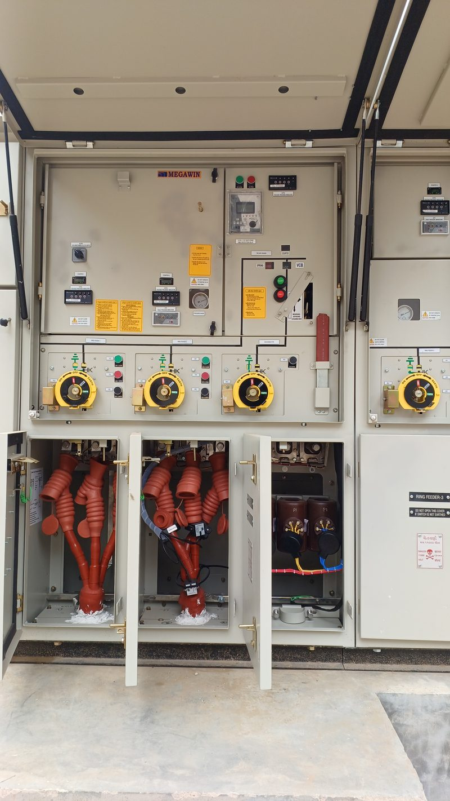
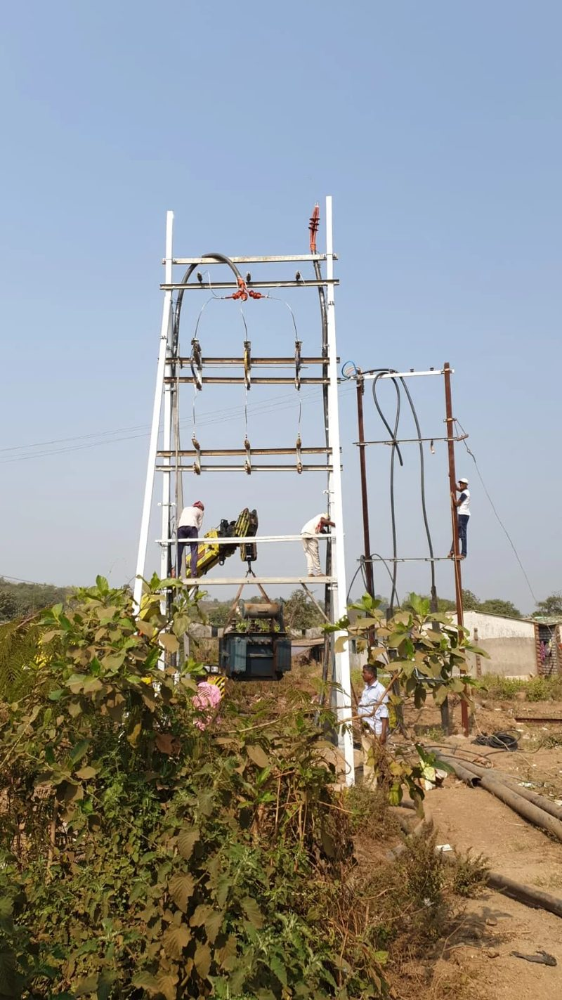
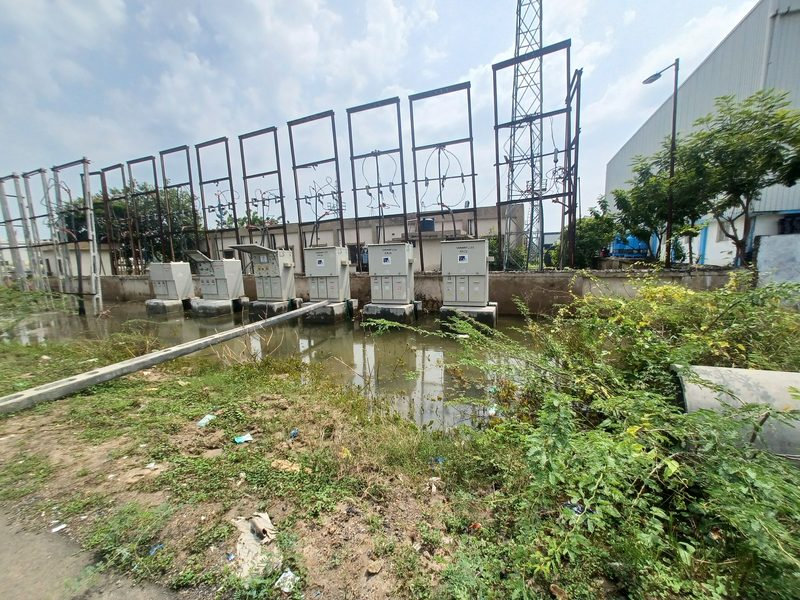

In today's rapidly evolving world, the demand for reliable and efficient power distribution keeps rising. As cities expand and loads grow, networks need robust infrastructure behind every switch and transformer. Two components sit at the heart of a distribution upgrade: Ring Main Units (RMUs) and Distribution Transformers (DTRs), and the foundations they stand on.
Understanding RMUs and DTRs
- RMUs (Ring Main Units): compact, enclosed medium-voltage switchgear used in ring-connected distribution networks, typically at 11kV. An RMU combines load-break switches, protection and earthing in one unit, so a section of the ring can be isolated for a fault or maintenance while customers are fed from the other side.
- DTRs (Distribution Transformers): transformers that step the medium-voltage supply, typically 11kV, down to the low-voltage supply used by homes, shops and industry. They are the last major step between the grid and the consumer.


Why the foundation matters
An RMU or DTR is only as dependable as what it stands on. The foundation must be stable and level, carry the weight of the equipment, and give cables a clean route in. A foundation error rarely shows up on day one. It shows up later as a tilted cubicle, a strained termination or a flooded cable chamber.
What a good foundation does
- Structural support. A solid, level base prevents movement, tilting or uneven settlement that would strain the equipment and its cable terminations.
- Vibration and settlement control. Transformers hum and vibrate in service. A rigid, well-compacted base keeps that from loosening connections or damaging surrounding structures.
- Protection from the environment. Raising the equipment above ground level, with proper drainage, helps protect it from water ingress, erosion and flooding. In seismically active regions, such as parts of Gujarat, the design must also allow for seismic loads.
- Cable entry and access. Duct sleeves, cable pits and earthing pits are built in, so cables can be terminated at the right bending radius and the unit can be reached for maintenance, which reduces downtime.

What to consider when designing the foundation
- Soil conditions. Bearing capacity and the water table at the site shape the size and depth of the foundation.
- Equipment weight and dimensions. The manufacturer's drawing sets the plinth size, the cut-outs and the fixing positions.
- Flooding and drainage. Plinth height and surrounding drainage should reflect the site's worst credible water level, not just the typical one.
- Seismic and environmental loads. Locations prone to earthquakes, erosion or other hazards need these built into the design.
- Cable entry and earthing. Duct sleeves and earthing pits are far easier to set into the pour than to retrofit.
- Utility specification. Distribution utilities issue approved drawings. The foundation must be built to them, with level and orientation checked before the equipment is placed.
How Royal Infra Projects builds them
RMU and DTR foundations are a core part of our work on underground network conversions. Plinths are cast to utility-approved drawings with cable entry provision, duct sleeves and earthing pits set into the pour. Level and orientation are verified before switchgear or transformer placement, because a foundation error becomes a termination problem later. This work has been part of our overhead-to-underground conversion programmes for UGVCL; see the Projects page, and our guide to why underground wiring matters.
In short
RMU and DTR foundations get little attention, but they provide structural support, vibration control, environmental protection and good cable access, which together decide how reliably the equipment on top performs over its life. If you are planning an RMU or DTR rollout, get in touch.